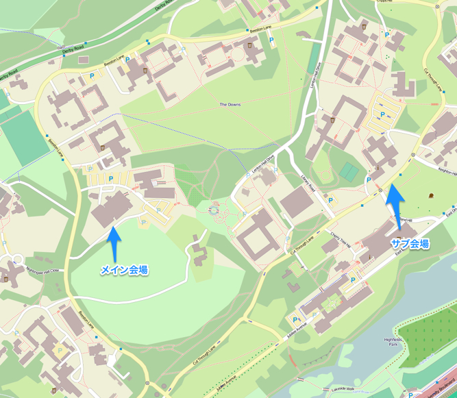

Maptember参加してきたって話
Taro Matsuzawa @smellman
Georepublic Japan
自己紹介
- Georepublic Japan シニアエンジニア
- Firefoxで二冊本書いた
- 破滅界隈
Maptemberとは
9月(September)にイギリスで地理情報系のイベントが集中
＿人人人人人人＿
＞ Maptember ＜
￣Y^Y^Y^Y^Y￣
今回出張でフル参戦しました。
開催場所

- State of the Map 2013 - Birmingham
- FOSS4G 2013 - Nottingham
- QGIS Hack Fest - Brighton
Birmingham と Nottingham の二つの都市を Mappingham と呼ぶように。
ちなみに僕は以下のルートで移動しました
- London
- Birmingham
- Stratford-upon-avon
- Brighton
- Nottingham
- Southampton
三週間ほどイギリスに滞在しました。
糞不味いラーメン
State of the Map 2013
- OpenStreetMapのお祭り
- 昨年は日本で開催
- 技術的な話からマッパー向け情報まで盛りだくさん
- 僕もLTに出ました 映像(MP4直リン), 資料
事件発生
イギリスの国営放送BBCがSOTM2013を取材し、昼間のニュースで流れる
＿人人人人＿
＞ 捏造 ＜
￣Y^Y^Y￣
QGIS Hack Fest
- QtベースのGIS QGISのハックイベント
- ４日間部屋借りてひたすらコーディングとかドキュメント作成
- ただひたすら...


ピザ
- すべてマルゲリータ
- ルッコラとかハムとかを自分でトッピング
- 上記のものは瞬殺するので基本的にマルゲリータをひたすら食う
- マルゲリータマルゲリータマルゲリータ
FOSS4G
- 地理情報系のオープンソース・ソフトウェアのイベント
- OSCの地理情報だけ版みたいな感じ
- 展示はあまりなく、講演がメイン
発表
- QGIS 2.0がリリースされ、QGISの話がやたらと多い
- サーバ系の発表も多く、SOTM同様ベクターマップが熱い
- オークニーの森さんのブログ の解説を見ましょう
- 僕も発表しました 映像, 資料
歩く
- キャンパス内の二つの建物で開催
- 見たいセッションごとにキャンパスを移動

だいたい徒歩10分ぐらいかかる
三行でまとめる
- BBCが捏造
- QGISはピザでできている
- 歩き疲れて死ぬ
- Gentoo Tシャツ着てる人がファンキーすぎる
宣伝
来月の FOSS4G 2013 Tokyo でこのレポートの真面目なバージョンを話す予定です！

さようなら、また来世